패러다임의 확장(정적 예측에서 동적 과정으로): 인공신경망이 단순히 정답 확률을 계산해 즉각적으로 뱉어내는 것을 넘어, 프란시스 돈더스(Francis Donders)의 ‘정신시간 측정(mental chronometry)’ 개념을 계승하여 생물학적 뇌가 실제 결정을 내리기 위해 필연적으로 소모하는 ’물리적 시간(time)’의 차원을 계산 모델링에 도입함.
증거축적(evidence accumulation)의 인지적 이해: 의사결정을 순간적인 상태(state)가 아니라, 노이즈가 섞인 감각 정보를 1ms 단위로 점진적으로 긁어모으는 역동적 흐름(dynamics)으로 재정의함.
표류확산 모델(Drift Diffusion Model, DDM)의 5대 파라미터 해부: 인지심리학의 기념비적 모델인 표류확산 모델을 구성하는 핵심변수(표류율, 임계값, 시작점, 노이즈, 비의사결정 시간)가 인간의 내적 성향 및 외부 환경과 어떻게 수학적으로 매핑되는지 규명함.
속도-정확성 타협(speed-accuracy trade-off)의 신경학적 증명: 뇌가 ’빠른 대답(속도)’을 낼 것인가, ’신중한 정답(정확성)’을 낼 것인가 하는 딜레마를 대뇌피질-기저핵(cortico-basal ganglia) 루프의 임계값 조작을 통해 어떻게 타협해내는지 코드로 시뮬레이션함.
파이썬 확률적 시뮬레이션(random walk) 구현: 무작위성(노이즈)에 의해 위아래로 격렬하게 흔들리는 증거축적 궤적을 파이썬 numpy를 활용해 직접 코딩하고, 인간의 실제 반응시간(RT) 분포와 유사한 꼬리가 긴(right-skewed) 엑스-가우시안(ex-Gaussian) 데이터를 생성해냄.
[그림 1] 학습의 원리 #3: 불확실성 속의 의사결정과 증거축적
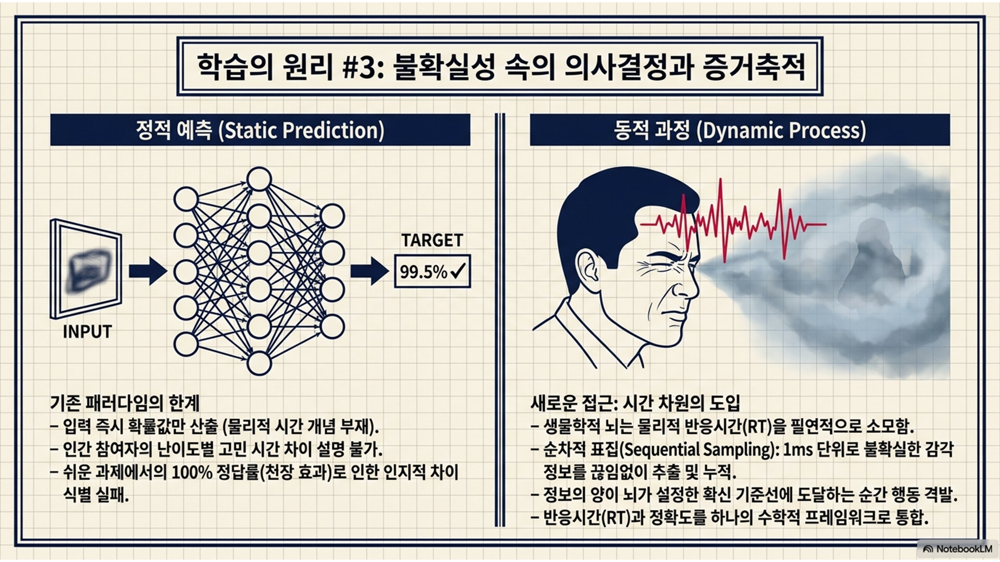
1부: 의사결정과 증거축적의 인지적 원리
1.1. 패러다임의 확장: ’정확도’를 넘어 ’시간’의 차원으로
이론적 설명
앞선 6주차까지 다룬 다층 퍼셉트론(MLP)이나 딥러닝 모델들은 입력이 주어지면 행렬 곱셈을 마친 뒤 “이것은 사과일 확률 98%, 토마토일 확률 2%”라는 정적(static)인 결과값만을 산출함.
그러나 실제 생물학적 뇌와 인지 시스템은 결정을 내리기 위해 반드시 물리적인 시간, 즉 반응시간(RT)을 소모함.
인간과 인공신경만 간의 차이
인지심리학 실험에서 참여자는 아주 명확하고 쉬운 과제는 0.3초 만에 대답하지만, 애매하고 어려운 과제는 2초 이상 고민함.
기존의 인공신경망은 맞았는지 틀렸는지(정확도)만 평가할 뿐, 이 ’고민하는 시간의 길이’를 전혀 설명하지 못함.
더욱이 쉬운 문제에서는 모든 피험자가 100% 정답을 맞혀버리는 천장 효과(ceiling effect)가 발생하여 참여자 간의 인지적 차이를 정확도만으로는 구별할 수 없는 한계에 직면함.
심화 해설(순차적 표집과 증거축적 이론)
1978년 로저 래트클리프(Roger Ratcliff)가 제안한 표류확산 모델(drift diffusion model, DDM)은 ’시간의 흐름’이라는 요소를 수학화하여 이 난제를 돌파함.
순차적 표집(sequential sampling) 이론
설명
표류확산 모델 모델의 근간이 되는 ‘순차적 표집(sequential sampling)’ 이론에 따르면, 뇌는 외부환경의 정보를 단 한 번의 스캔으로 파악하지 않음.
대신 노이즈가 가득 섞인 불확실한 정보를 1ms 단위로 끊임없이 추출(sampling)하고 뇌 피질에 누적함.
모인 정보의 양(증거)이 뇌가 미리 설정해둔 ’확신 기준선(임계값)’에 도달하는 바로 그 순간, 비로소 운동피질이 자극되어 행동(버튼 누르기 등)의 방아쇠가 격발됨.
이를 통해 반응시간(RT)과 정확도를 하나의 통합된 프레임워크에서 설명할 수 있게 됨.
예시
짙은 안개가 낀 밤거리를 걷고 있는데, 저 멀리서 다가오는 희미한 실루엣이 ’친구’인지 ’모르는 사람’인지 판단해야 하는 상황을 떠올려보자.
환경적 노이즈: 안개 때문에 형체가 흐릿함.
시각적 노이즈: 가로등 불빛이 깜빡거려서 헷갈림.
내 눈의 시신경과 뇌세포도 기계가 아니기 때문에, 정보를 전달할 때 지지직거리는 생물학적 잡음(신경학적 노이즈)이 끼어듦.
이처럼 우리가 무언가를 보고 판단할 때, 뇌로 들어오는 첫 정보는 언제나 ’지지직거리는 정체불명의 실루엣(노이즈가 가득 섞인 불확실한 정보)’임.
1ms 단위로 끊임없이 추출한다는 것은?
뇌는 이 흐릿한 실루엣을 보고 “모르겠다!” 하고 포기하거나 단 한 번의 시선으로 찍어서 넘겨짚지 않음. 대신 1초를 1,000개로 쪼갠 아주 짧은 시간(1ms)마다 눈으로 들어오는 미세한 조각(힌트)들을 끊임없이 캡처(추출)하여 뇌 속의 바구니에 담음.
[1ms 째]: “어? 키가 좀 큰 것 같은데?” \(\rightarrow\) 친구일 확률 +1점 바구니에 담음.
[2ms 째]: “아, 안개 때문에 잘못 봤나? 그림자였네.” \(\rightarrow\) 의미 없는 노이즈, 점수 깎임.
[3ms 째]: “걸음걸이가 약간 팔자걸음인데?” \(\rightarrow\) 친구일 확률 +2점 바구니에 담음.
[4ms 째]: “가로등이 깜빡해서 순간 딴 사람처럼 보였어.” \(\rightarrow\) 노이즈, 다시 점수 깎임.
… (이 과정을 수백 번 반복) …
[300ms 째]: “입고 있는 옷 색깔이 내 친구가 자주 입는 패딩이야!” \(\rightarrow\) 결정적 증거 수집!
왜 이런 과정을 거치는가?
만약 뇌가 1ms 째에 들어온 단 1개의 조각(키가 크다)만 보고 판단했다면, 사실은 안개(노이즈)에 비친 그림자였을 수도 있으니 큰 실수를 저질렀을 것.
따라서 뇌는 이 지지직거리는 단편적인 정보들을 아주 짧은 시간(1ms)마다 계속해서 긁어모음. 노이즈 때문에 확신이 올라갔다 내려갔다(요동치며)를 반복하지만, 진짜 친구라면 결국 시간(수백ms)이 지날수록 바구니에 ’친구’라는 증거가 더 많이 쌓이게 됨.
마침내 바구니에 증거가 가득 차서 “좋아, 이 정도면 내 친구가 확실해!(임계값 도달)”라고 느끼는 바로 그 순간, 뇌는 “야!” 하고 소리치거나 손을 흔드는 행동(의사결정)의 방아쇠를 당기는 것.
결론: 정보가 불확실하니까 한 번에 판단하지 않고, 아주 짧은 찰나의 순간마다 조금씩 힌트를 주워 모아 퍼즐을 맞추듯 확신을 채워나감!
비유(고성능 카메라 vs 빗물 양동이)
기존 신경망(고성능 카메라): 캄캄한 밤에 플래시를 한 번 터뜨려 사진을 찰칵 찍고(순전파 1회), 그 한 장의 사진만으로 “이건 도둑이다!”라고 즉각적이고 결정론적인 판별을 내리려 함. 시간의 개념이 존재하지 않음.
표류확산 모델(빗물 양동이): 안개 낀 날 지붕에서 떨어지는 빗방울(증거)을 마당에 놓인 양동이(뇌의 작업기억)에 한 방울씩 모으는 지루한 과정임. 양동이에 물이 찰랑찰랑 차올라 테두리(임계값)를 넘치는 그 찰나의 순간, 비로소 “비가 충분히 많이 왔다!”라고 확신하며 결정을 내림.
[그림 2] 증거축적 과정: 뇌 속의 정보 저금통
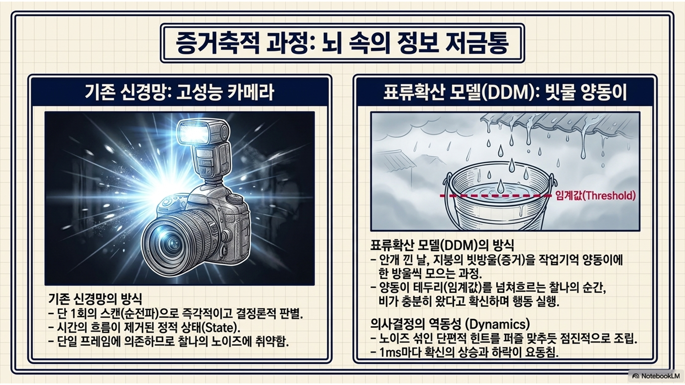
1.2. 표류확산 모델(DDM)의 핵심 파라미터 해부
이론적 설명
DDM은 인간의 복잡한 의사결정 과정을 단 5개의 수학적 파라미터로 분해함. 이 변수만 조절하면 세상에 존재하는 모든 인간 참여자의 반응시간과 정답률 패턴을 재현할 수 있음.
1. 임계값(threshold, \(a\)): 결정을 내리기 위해 필요한 증거의 총량. 위쪽 정답 임계선(\(+a\))과 아래쪽 오답 임계선(\(-a\), 또는 0) 사이의 거리.
2. 표류율(drift rate, \(v\)): 단위 시간당 증거가 쌓이는 평균적인 속도와 방향. 이 값이 클수록 정보가 한 방향으로 가파르게 축적됨.
3. 노이즈(noise, \(\sigma\)): 정보처리 과정에서 매 순간 발생하는 무작위적인 변동성. 수학적으로는 ’정규분포를 따르는 백색잡음(Gaussian white noise)’으로 모델링됨.
인지적/신경학적 의미(도대체 왜 흔들리는가?)
예시: 모니터 화면의 화살표 방향을 보고 버튼을 누르는 단순한 실험을 한다고 가정해보자.
감각적 잡음: 내 눈의 시신경은 기계가 아님. 미세하게 눈이 떨리거나(미세 단속운동), 조명이 살짝 깜빡이는 등 외부 감각 정보 자체가 지지직거림.
신경학적 잡음: 뇌세포(뉴런)들은 외부자극이 없어도 쉴 새 없이 자기들끼리 무작위로 전기신호를 뿜어냄(자발적 발화).
인지적 잡음: 그 찰나의 1ms 동안에도 나의 주의력이 미세하게 흐트러지거나, 무의식중에 딴생각이 끼어듦.
결론: 이러한 모든 방해요소들이 합쳐져서, 뇌가 정답을 향해 직진하지 못하고 위아래로 비틀거리게 만드는 것이 바로 ’노이즈’임.
행동적 의미(이 노이즈가 우리의 행동을 어떻게 만드는가?)
시행 간 변동성(왜 매번 반응시간이 다를까?): 완전히 똑같이 쉬운 문제를 100번 풀게 해도, 인간은 어떤 때는 0.3초, 어떤 때는 0.5초가 걸림. 노이즈가 우연히 ’정답 방향’으로 연속해서 터져주면 확신이 확 차올라 빨리 누르고, ’오답 방향’으로 훼방을 놓으면 확신이 차오르는 시간이 지연되기 때문.
어이없는 실수의 탄생(왜 쉬운 문제도 틀릴까?): 1+1=2처럼 눈감고도 푸는 문제(표류율이 엄청나게 높은 상태)라도 인간은 아주 가끔 치명적인 오답을 냄. 아무리 정답을 향해 강하게 끌어당겨도, 우연히 엄청나게 거대한 노이즈가 반대 방향(오답 쪽)으로 연속해서 터져버리면 순간적으로 뇌가 착각에 빠져 오답 임계선에 부딪히기 때문.
수학적 의미(’정규분포를 따르는 백색잡음’이란?)
정규분포(Gaussian): 일상적으로 흔히 일어나는 ’자잘한 흔들림’이 대부분이고, 내 마음을 크게 뒤흔드는 ’거대한 흔들림’은 확률적으로 아주 가끔씩만 튀어나온다는 뜻.
백색잡음(white noise): TV 주파수가 안 맞을 때 “치이익-” 하는 화면처럼, 방금 전 1ms의 흔들림이 지금의 흔들림에 아무런 영향을 주지 않는다는 뜻. 매 순간마다 완전히 새롭게, 무작위로 주사위를 굴려서 뇌를 흔든다는 의미.
비유
무작위 행보(random walk): 내가 아무리 운전대를 일직선(정답)으로 꽉 잡고 있어도, 바퀴가 돌부리(노이즈)에 튕길 때마다 차체는 좌우로 덜덜덜 요동침.
운 좋게 돌부리가 목적지 방향으로 차를 튕겨주면 예상보다 빨리 도착하고, 돌부리를 심하게 밟아 반대편으로 크게 튕기면 낭떠러지(오답)로 굴러떨어지며 치명적인 실수를 저지르게 되는 것.
4. 시작점(starting point, \(z\)): 의사결정이 시작되는 초기 위치. 보통 임계값의 정중앙(\(a/2\))에서 시작하지만, 피험자가 특정 정답에 미리 편향되어 있다면 시작점이 한쪽으로 쏠리게 됨.
5. 비의사결정 시간(non-decision time, \(T_{er}\)): 순수한 인지적 고민(증거축적) 외에, 시각적 지각이나 근육운동에 소요되는 순수 물리적 지연시간.
심화 해설(내적 성향과 외적 환경의 완벽한 분리)
DDM의 의의는 인간의 내적 성향과 외부환경의 영향을 파라미터로 완벽히 분리(decomposition)해냈다는 데 있음.
임계값(\(a\))과 시작점(\(z\)): 피험자의 ’성격(신중함 vs 성급함)’이나 과제의 ’사전지식(prior probability)’에 의해 뇌 내부에서 능동적으로 세팅되는 통제변수임.
표류율(\(v\))
철저히 외부환경에 의해 수동적으로 결정되는 물리적 변수임.
이는 화면에 제시된 자극의 ‘선명도’나 ’난이도’, 즉 신호 대 잡음비(signal-to-noise ratio)를 반영함. 쉽게 말해 나를 헷갈리게 만드는 방해요소(잡음)들 속에서 내가 찾아야 할 진짜 정답의 힌트(신호)가 얼마나 뚜렷하게 자기주장을 하고 있는가를 의미함.
진짜 힌트가 선명할수록 표류율은 커지고(쉬운 문제), 방해물이 많아 헷갈릴수록 표류율은 작아짐(어려운 문제).
비유(안개 속의 두 갈래 길: 산장 vs 낭떠러지)
등산객이 짙은 안개가 낀 눈보라 치는 산속에서 길을 잃었음. 앞으로 계속 가면 따뜻하고 안전한 [산장(+A)]이 나오고, 뒤로 돌아가면 위험한 [낭떠러지(-A)]가 나옴. 우리는 살기 위해 주변의 희미한 단서(증거)를 모아야 함.
임계값(\(a\)): 내 성격. “내가 목숨을 걸고 완벽하게 확신할 때까지 단서를 꼼꼼히 모을 것인가(넓은 임계값), 아니면 대충 감만 오면 일단 뛰고 볼 것인가(좁은 임계값)?”
표류율(\(v\)): 눈보라의 척도. “눈보라가 얼마나 걷혀서, 저 멀리 불빛이나 표지판 등 진짜 유의미한 단서가 내 눈에 팍팍 꽂히고 있는가?”
시작점(\(z\)): 선입견과 편향. 만약 내가 평소에 “이 산은 직진하면 무조건 산장이 가까워”라는 편견을 가지고 출발한다면, 0에서 시작하는 게 아니라 이미 산장 쪽 임계선에 40% 정도 치우친 위치에서 유리하게 고민을 시작함.
[그림 3] 표류확산 모델의 파라미터와 기하학적 구조
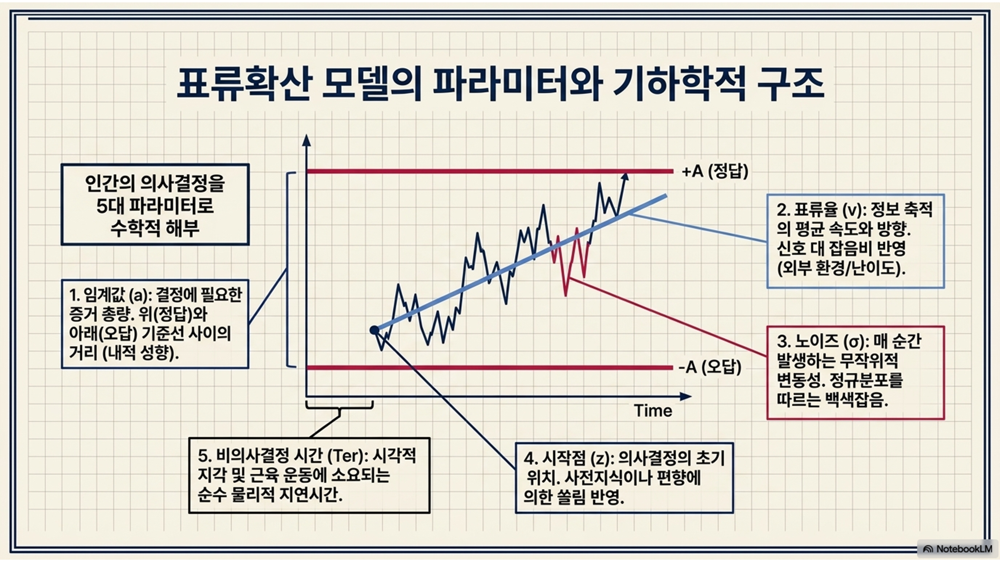
[실습 1-1] 파이썬으로 구현하는 기초 무작위 행보 의사결정 시뮬레이션
시간의 흐름에 따라 노이즈가 섞인 증거가 위아래로 요동치며 누적되다가, 결국 임계선에 도달해 의사결정이 끝나는 과정을 파이썬 단일 루프 코드로 시뮬레이션함.
[그림 4] [실습 1-1] 코드 해부: 무작위 행보(random walk) 증거축적
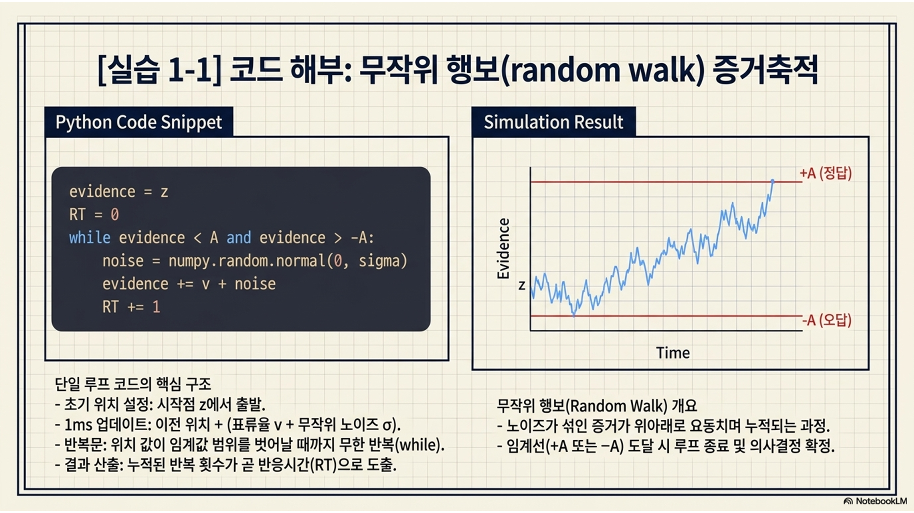
Code
import numpy as np # 수치 연산 및 가우시안 무작위 난수 생성을 위해 numpy 라이브러리를 임포트함# 1. DDM 핵심 파라미터 세팅 (안개 속의 산장 찾기 비유)v =0.05# 표류율: 1ms당 평균적으로 뇌에 들어오는 진짜 정보의 양 (양수이므로 산장 방향을 지시함)a =2.0# 임계값: 마음속 누적된 확신이 +2.0에 닿으면 '산장', -2.0에 닿으면 '낭떠러지'로 최종 결정을 내림noise_std =0.1# 노이즈: 매 순간 뇌를 흔드는 환경적/신경학적 불확실성의 크기 (정규분포의 표준편차)# 시뮬레이션 환경 세팅dt =1# 시간 단위: 뇌가 시각 정보를 새롭게 갱신하는 주기를 1ms로 설정함max_time =500# 최대 관찰 시간: 500ms 안에 결정하지 못하면 관찰을 종료하기 위한 제한 시간 설정evidence =0.0# 초기 증거량(시작점 z): 내 마음속의 초기 증거 저금통을 어떤 편견도 없는 0.0으로 초기화함print("=== [실습 1-1] 표류확산 모델(DDM): 뇌 속의 의사결정 궤적 시뮬레이션 ===")print(f"목표: 누적된 증거가 산장(+{a}) 또는 낭떠러지(-{a}) 임계선에 닿아 방아쇠를 당겨야 함.\n")# 2. 증거축적(Random Walk) 1회 시뮬레이션 시작history_evidence = [evidence] # 시간 흐름에 따른 증거의 역동적인 변화 궤적을 저장할 빈 리스트 생성for t inrange(1, max_time +1): # 1ms부터 최대 500ms까지 시간을 1씩 증가시키며 무한 고민 루프 실행# 매 ms마다 들어오는 정보 = (진짜 정보인 표류율 v * 시간 dt) + (우연히 발생한 백색 노이즈)# np.random.normal(0, noise_std)는 평균이 0, 표준편차가 0.1인 무작위 숫자를 뽑아 혼란을 더함 instant_evidence = v * dt + np.random.normal(0, noise_std)# 뇌의 기억 저금통(evidence 변수)에 방금 생성된 헷갈리는 증거(instant_evidence)를 누적해서 덧셈함 evidence += instant_evidence# 나중에 그래프를 그리거나 분석하기 위해 갱신된 현재 증거량을 리스트에 추가함 history_evidence.append(evidence)# 50ms(ms)가 경과할 때마다 현재 마음의 상태(증거량)를 화면에 출력하여 변화를 모니터링함if t %50==0:print(f"[Time {t:3d} ms] 현재 누적된 증거량: {evidence:>5.2f} (위아래로 요동치며 고민하는 중...)")# 3. 의사결정 방아쇠 격발(임계선 도달 검사)if evidence >= a: # 마음속 확신(누적 증거)이 위쪽 산장 기준선(+2.0)을 뚫고 올라갔는지 검사print(f"\n [결정 완료!] 시간 {t} ms: 증거가 +{a}를 돌파하여 '산장으로 간다'고 결정 내림! (정답)")break# 결정을 내렸으므로 증거축적 루프를 즉시 탈출함 (반응시간 t 확정)elif evidence <=-a: # 마음속 확신(누적 증거)이 아래쪽 낭떠러지 기준선(-2.0)을 뚫고 내려갔는지 검사print(f"\n️ [결정 완료!] 시간 {t} ms: 증거가 -{a}를 돌파하여 '뒤로 돌아간다'고 결정 내림! (오답)")break# 오답 결정이라도 결정은 내려진 것이므로 루프를 즉시 탈출함 (반응시간 t 확정)print("\n-> 통찰: 인간의 의사결정은 단 한 번의 곱셈으로 끝나는 것이 아니라, 노이즈와 진짜 정보가 뒤섞인 채 위아래로 격렬하게 요동치며 목표를 향해 나아가는 '확률적 무작위 행보(random walk)'임.")
=== [실습 1-1] 표류확산 모델(DDM): 뇌 속의 의사결정 궤적 시뮬레이션 ===
목표: 누적된 증거가 산장(+2.0) 또는 낭떠러지(-2.0) 임계선에 닿아 방아쇠를 당겨야 함.
[Time 50 ms] 현재 누적된 증거량: 2.00 (위아래로 요동치며 고민하는 중...)
[결정 완료!] 시간 51 ms: 증거가 +2.0를 돌파하여 '산장으로 간다'고 결정 내림! (정답)
-> 통찰: 인간의 의사결정은 단 한 번의 곱셈으로 끝나는 것이 아니라, 노이즈와 진짜 정보가 뒤섞인 채 위아래로 격렬하게 요동치며 목표를 향해 나아가는 '확률적 무작위 행보(random walk)'임.
1.3. 노이즈의 인지적 의미와 오답의 탄생
이론적 설명
다층 퍼셉트론 같은 전통적인 연결주의 모델들은 결정론적 모델임. \(\Rightarrow\) 동일한 입력 이미지가 주어지면 언제나 100% 똑같은 확률값을 뱉어내며, 기계처럼 동일하게 반응함.
그러나 실제 인간 피험자는 전혀 그렇지 않음. 똑같이 쉬운 자극(예: 빨간색 사과 사진)을 100번 보여줘도, 어떤 때는 0.2초 만에 누르고 어떤 때는 0.5초가 걸리며, 심지어 가끔은 토마토 버튼을 누르는 어이없는 실수(오답)를 저지름.
DDM 모델의 노이즈(\(\sigma\)): 생물학적 신경계가 가진 본질적인 무작위성과 불확실성을 ’위너 과정(Wiener process)’이라는 수학적 확률 과정으로 완벽하게 구현한 것임.
위너 과정
정의: 미국의 수학자 노버트 위너(Norbert Wiener)가 정립한 개념으로, 물리학에서 말하는 브라운 운동(Brownian motion, 물에 뜬 꽃가루가 무작위로 부들부들 떠는 현상)을 수학적으로 엄밀하게 정의한 연속 확률 과정(continuous stochastic process)임.
DDM에서의 역할: 표류확산 모델의 뼈대가 되는 수학공식
\(dx = v \cdot dt + \sigma \cdot dW\)
\(dx\): 아주 짧은 순간 동안 변한 내 마음(증거)의 양.
\(v \cdot dt\): 표류율(\(v\))에 의해 정답을 향해 밀고 가는 일관된 힘.
\(\sigma \cdot dW\): 여기서 \(dW\)가 바로 위너 과정의 미세한 변화량. 이 \(dW\)에 노이즈의 크기(\(\sigma\))를 곱하여, 내 마음을 위아래로 흔드는 무작위적인 힘을 수식으로 완성한 것.
세 가지 특징
완벽한 기억상실(독립증분[independent increments])
위너 과정은 과거를 절대 기억하지 않음. 1ms 전에 위로 크게 흔들렸다고 해서, 다음 1ms에 아래로 내려갈 확률이 높아지지 않음. 찰나의 순간마다 과거와는 완벽하게 독립적으로 주사위를 새로 던져서 다음 위치를 결정함.
인간의 신경학적 잡음(주의력 분산, 시냅스 무작위 발화) 역시 방금 전의 잡음이 지금의 잡음을 예측하게 해주지 않는, 매 순간 새롭게 발생하는 백색 잡음임.
흔들림의 정규분포(Gaussian increments): 위너 과정이 만들어내는 매 순간의 흔들림(\(dW\))은 정규분포를 따름. \(\Rightarrow\) 자잘하고 미세한 흔들림은 매우 자주 발생하지만, 훅 튀어 오르는 거대한 흔들림은 확률적으로 아주 가끔씩만 발생.
시간이 갈수록 커지는 불확실성(분산의 팽창): 위너 과정은 시간이 흐를수록 ‘내가 도대체 어디에 있을지’ 예측할 수 있는 범위(분산)가 시간에 비례하여 계속해서 넓어짐. \(\Rightarrow\) 고민을 오래 할수록 뇌 속의 정보궤적은 노이즈에 의해 더 넒은 범위로 흩어지게 됨.
비유: 기억상실증에 걸린 취객의 비탈길 걷기
순수 위너 과정(표류율 \(v = 0\) 인 상태)
독립증분: 거대한 평평한 광장 한가운데에 심각한 기억상실증에 걸린 취객이 서 있음. 이 취객은 방금 전 자기가 왼발을 내디뎠는지 오른발을 내디뎠는지 전혀 기억하지 못함.
시간에 따른 불확실성 증가: 매초 동전을 던져 앞면이 나오면 앞으로 비틀, 뒷면이 나오면 뒤로 비틀거림. 1시간 뒤 이 취객이 어디에 있을지 정확히 맞히는 것은 불가능.
DDM의 완성(위너 과정 + 표류율)
이제 이 평평한 광장을 스키 점프대처럼 아래로 기울어진 비탈길(표류율 \(v\))로 만들어보자.
취객(위너 과정)은 여전히 동전을 던지며 사방으로 비틀거리고 넘어지지만, 땅이 기울어져 있기 때문에 결국 시간이 지나면 요동을 치면서도 서서히 비탈길 아래쪽(정답 임계선)으로 굴러가게 됨.
하지만 취객이 비틀거리다 우연히 위쪽으로 크게 연속해서 스텝을 밟으면, 비탈길의 경사를 거스르고 엉뚱한 위쪽 벽(오답 임계선)에 부딪히는 치명적인 실수도 발생하게 됨.
결론: 위너 과정은 방향성 없이 매 순간 독립적으로 비틀거리는 완벽한 무작위성을 수학적으로 빚어낸 것. \(\Rightarrow\) 이것이 DDM 방정식에 들어가 인간 특유의 ’헷갈림’과 ’실수’를 시뮬레이션해냄.
심화 해설(기저 점화와 신경학적 잡음)
뇌는 진공 상태에 떠 있는 컴퓨터 칩이 아님. 결정을 내리는 그 1ms의 순간에도, 피험자의 뇌간(brainstem)에서 분비되는 노르에피네프린(norepinephrine) 수준에 따라 각성도가 달라지고, 주의력이 일시적으로 흐트러지거나, 무의식적인 기억이 무작위로 점화(priming)되는 등 통제 불가능한 ’신경학적 백색 잡음(neural white noise)’이 시냅스를 돌아다님.
표류율(\(v\))이 아무리 명확하게 양수(산장 방향)를 가리키고 있어도, 이 랜덤한 노이즈가 우연히 마이너스 방향으로 연속해서 크게 터져버리면, 증거축적 궤적이 순식간에 반대편 임계선(-A)에 부딪혀 치명적인 오답(실수)을 내게 됨.
이것이 인간이 아무리 집중해서 쉬운 인지과제를 풀어도 100% 정답을 내지 못하고 간헐적 실수를 범하는 시행 간 변동성(trial-to-trial variability)의 핵심 원인임.
비유(비포장도로 운전)
노이즈가 없는 상태: 얼음 위에서 스케이트를 타고 목적지를 향해 직선으로 쭉 미끄러져 가는 완벽히 통제된 상황. 외부의 개입이 없으므로 목표를 빗나갈 확률이 0%에 수렴함.
노이즈가 가득한 상태: 자갈과 웅덩이가 가득한 거친 비포장도로에서 서스펜션이 망가진 낡은 트럭을 몰고 가는 상황. 운전자가 핸들(표류율)을 꽉 잡고 산장 쪽으로 틀어놓아도, 바퀴가 돌부리(노이즈)에 튕길 때마다 차체가 좌우로 심하게 요동침. 운이 나쁘면 절벽(오답 임계선) 쪽으로 튕겨나가 돌이킬 수 없는 사고가 발생함.
[그림 5] 위너 과정과 DDM
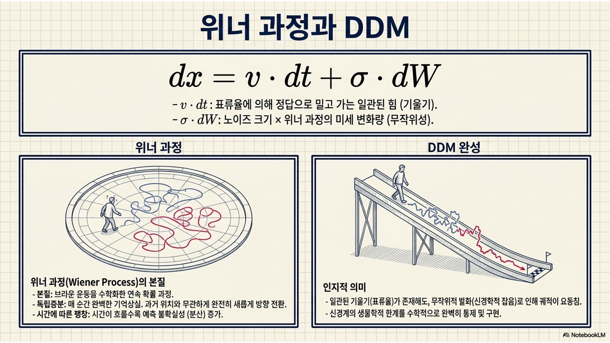
[실습 1-2] 노이즈 크기 조작에 따른 결정의 붕괴 시뮬레이션
노이즈가 적을 때와 극단적으로 클 때, 동일한 쉬운 문제(난이도 고정)임에도 불구하고 오답을 내릴 확률이 어떻게 붕괴하는지 파이썬 100회 루프 시뮬레이션을 통해 직접 관찰함.
[그림 6] [실습 1-2] 노이즈에 의한 확률적 의사결정 붕괴
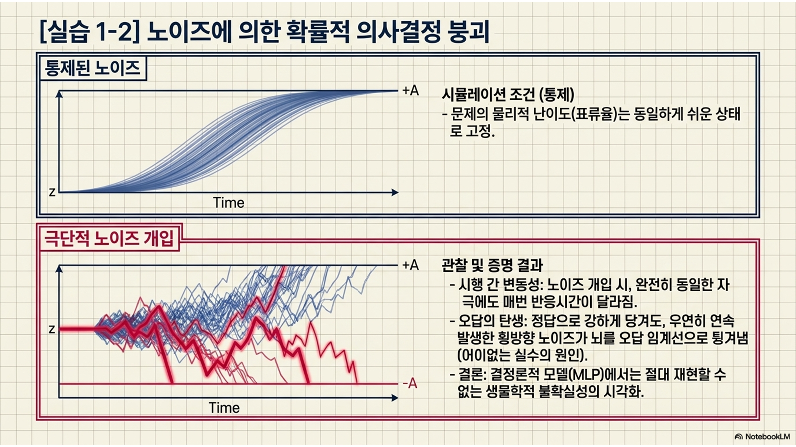
Code
# 여러 번의 반복적인 재현과 뇌의 생물학적 무작위성을 모사하기 위해 랜덤 시드 고정 생략함. # 실행할 때마다 노이즈에 의해 조금씩 다른 오답률이 도출될 수 있음.def run_noise_simulation(noise_level, trials=100): # 특정 노이즈 수준에서 여러 번(trials) 의사결정을 반복하는 함수 정의 v =0.1# 표류율(난이도)은 비교적 뚜렷하고 쉬운 양수(산장 방향)로 통제변인으로 고정함 a =2.0# 임계값(성격) 역시 2.0으로 좁지도 넓지도 않게 고정함 correct =0# 정답(+a 도달) 횟수를 누적하여 기록할 정수형 변수 초기화 error =0# 오답(-a 도달) 횟수를 누적하여 기록할 정수형 변수 초기화for _ inrange(trials): # 지정된 횟수(기본 100회)만큼 독립적인 의사결정 시뮬레이션을 반복 실행함 evidence =0.0# 매 새로운 시도(trial)마다 뇌의 증거 저금통을 0.0으로 깨끗하게 리셋함for _ inrange(1000): # 한 번의 결정에 최대 1000ms(1초)의 생각 시간을 허용하는 내부 루프# 매 ms마다 표류율(v)에 전달받은 수준(noise_level)의 가우시안 노이즈를 섞어 증거를 갱신함 evidence += v + np.random.normal(0, noise_level)if evidence >= a: # 갱신된 증거가 위쪽 정답 임계선(+2.0)을 최종적으로 뚫었는지 확인 correct +=1# 정답 조건을 만족했으므로 정답 카운트를 1 증가시킴break# 결정을 이미 내렸으므로 1000ms 루프를 즉시 종료하고 다음 시도로 넘어감elif evidence <=-a: # 갱신된 증거가 아래쪽 오답 임계선(-2.0)을 뚫었는지 확인(치명적 실수 발생!) error +=1# 오답 조건을 만족했으므로 오답 카운트를 1 증가시킴break# 오답 결정을 내렸으므로 시간 루프를 즉시 종료하고 다음 시도로 넘어감return correct, error # 100회 시도가 모두 끝난 후 누적된 최종 정답 횟수와 오답 횟수를 반환함print("=== [실습 1-2] 노이즈(Noise)가 뇌의 결정을 어떻게 교란하는가 ===")# 1. 맑은 날씨(시냅스 전달 노이즈가 매우 적은 0.1의 통제된 뇌의 상태 시뮬레이션)c_low, e_low = run_noise_simulation(noise_level=0.1) # 함수를 호출하여 맑은 날씨 조건의 결과를 변수에 할당함# 2. 폭풍우 치는 날씨(주의력이 심각하게 분산되고 노이즈가 1.5로 폭주하는 뇌의 상태 시뮬레이션)c_high, e_high = run_noise_simulation(noise_level=1.5) # 함수를 호출하여 폭풍우 조건의 결과를 변수에 할당함# 두 극단적인 노이즈 조건의 시뮬레이션 결과를 화면에 나란히 출력하여 직관적으로 비교함print(f"[맑고 평온한 뇌 (노이즈 0.1)] 정답: {c_low:3d}번 | 오답(실수): {e_low:3d}번")print(f"[폭풍우 치는 뇌 (노이즈 1.5)] 정답: {c_high:3d}번 | 오답(실수): {e_high:3d}번")print("\n-> 통찰: 핸들(표류율 v=0.1)이 뚜렷하게 정답(+)을 향해 틀어져 있어도, 뇌 속의 신경학적 잡음(노이즈)이 심해지면 우연의 일치로 증거가 반대편 낭떠러지로 곤두박질치며 잦은 오답(실수)을 만들어내는 인지적 붕괴 현상을 증명함.")
=== [실습 1-2] 노이즈(Noise)가 뇌의 결정을 어떻게 교란하는가 ===
[맑고 평온한 뇌 (노이즈 0.1)] 정답: 100번 | 오답(실수): 0번
[폭풍우 치는 뇌 (노이즈 1.5)] 정답: 59번 | 오답(실수): 41번
-> 통찰: 핸들(표류율 v=0.1)이 뚜렷하게 정답(+)을 향해 틀어져 있어도, 뇌 속의 신경학적 잡음(노이즈)이 심해지면 우연의 일치로 증거가 반대편 낭떠러지로 곤두박질치며 잦은 오답(실수)을 만들어내는 인지적 붕괴 현상을 증명함.
2부: 속도-정확성 타협(speed-accuracy trade-off)의 수학적 증명
2.1. 임계값(\(a\))의 마법: 신중함과 성급함의 경계
이론적 설명
1800년대부터 연구되어온 인지심리학의 가장 보편적인 법칙인 속도-정확성 타협 현상은 표류확산 모델의 임계값(\(a\)) 파라미터 조작 하나만으로도 완벽하게 수학적으로 통제되고 증명됨.
성급한 지시: 실험자가 “틀려도 좋으니 무조건 최대한 빨리 누르세요!”라고 시간압박을 주면, 뇌는 스스로 임계값(\(a\))의 간격을 아주 좁게 설정함. 아주 얕은 정보만 들어와도, 심지어 우연히 튄 긍정적 노이즈에 의해서라도 방아쇠가 쉽게 당겨지므로 평균 반응시간(RT)은 극단적으로 짧아지지만, 정답을 빗나갈 오답률은 기하급수적으로 치솟게 됨.
신중한 지시: 반대로 “시간이 오래 걸려도 좋으니 단 한 번도 틀리지 마세요!”라고 정확성을 강조하면, 뇌는 임계값(\(a\))의 간격을 위아래로 아주 넓게 벌림. 어설픈 노이즈의 일시적 흔들림으로는 이 거대한 임계선에 절대 닿지 못하므로 정확도는 100%에 수렴하게 되지만, 그 거대한 양동이에 증거를 꽉 채우는 데 엄청난 물리적 반응시간(RT)을 희생해야만 함.
심화 해설(전두엽과 기저핵의 신경회로망)
임계값 조절의 신경학적 기제(뇌 속의 브레이크 시스템)
임계값을 자유자재로 벌리거나 좁히는 통제권은 전두엽(prefrontal cortex)과 뇌 깊숙한 곳에 있는 기저핵(basal ganglia)의 협업으로 이루어짐.
특히 기저핵 내부의 시상하핵(subthalamic nucleus, STN)을 거치는 고속 신경회로가 핵심적인 브레이크 역할을 담당함.
무엇에 브레이크를 거는가?
설명: 증거가 충분히 모이지도 않았는데, 대충 감만 믿고 섣불리 행동(버튼 누르기)을 저지르려는 성급한 운동충동을 강력하게 억제하는 것임.
임계값 확대: 인간은 맥락을 파악함. 내 목숨이 걸린 중대한 결정 앞에서는 전두엽이 이 시상하핵 브레이크를 아주 강하게 밟아 충동적인 행동이 튀어나가지 못하게 꽉 붙잡아둠. 행동이 지연되는 동안 뇌는 증거를 더 꼼꼼히 모을 수 있으며, 이것이 수학적 모델에서는 임계값(\(a\))이 위아래로 넓게 벌어지는 현상으로 나타남.
임계값 축소: 반대로 가벼운 게임을 하거나 시간에 쫓길 때는 이 브레이크를 느슨하게 풀어버림. 그 결과 얕은 증거만 모여도 제어할 틈 없이 즉각 행동이 튀어나가게 됨.
인간은 맥락을 파악하여 브레이크의 장력을 조절
임계값 확대: 내 목숨이 걸린 중대한 암 진단이나 수능 시험장에서는 전두엽이 시상하핵 브레이크를 강하게 걸어 임계값을 극단적으로 넓혀놓고 신중하게 증거를 살핌.
임계값 축소: 길을 걷다 뱀을 발견하거나 가벼운 스마트폰 터치 게임을 할 때는 전두엽이 브레이크를 풀어버려 뇌를 동물처럼 반사적이고 성급한 상태로 세팅함.
비유(명품 장인과 컨베이어 벨트 노동자)
넓은 임계값(스위스 시계 장인): 완벽한 명품 시계가 완성될 때까지(충분한 증거가 모일 때까지) 절대 공방 밖으로 물건을 내보내지 않음. 시계의 품질(정확도)은 100% 보장되지만, 시계 하나를 만드는 데 몇 달(엄청난 반응시간)이 걸림.
좁은 임계값(컨베이어 벨트 노동자): 1분에 100개씩 물건을 대충 포장해서 찍어내야 하는 압박을 받음. 생산속도는 엄청나게 빠르지만, 가끔 빈 상자가 나가거나 불량품(오답)이 섞여 나가는 것을 절대 피할 수 없음.
[그림 7] 임계값 조작에 따른 속도-정확성 타협 그래프
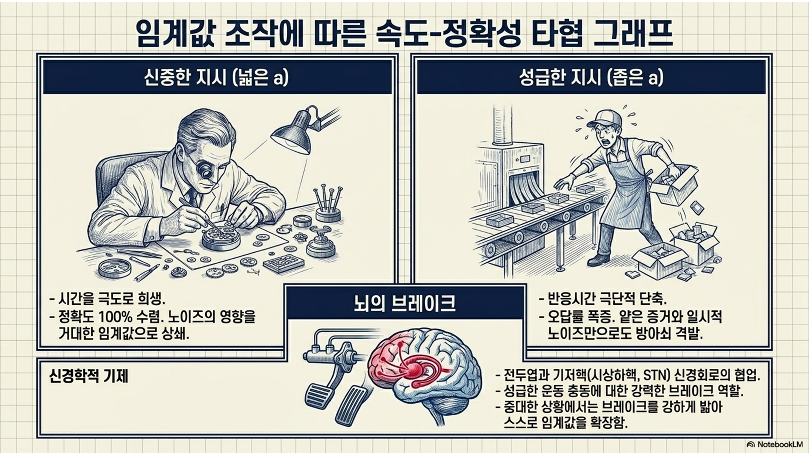
[실습 2-1] 임계값(\(a\)) 조작을 통한 타협 시뮬레이션(1000회 반복)
’성급한 뇌(좁은 임계값)’와 ’신중한 뇌(넓은 임계값)’를 코드로 구현하고, 파이썬 루프를 각각 1,000번씩 시뮬레이션하여 평균 반응시간과 정답률이 톱니바퀴처럼 상충(trade-off)하는 현상을 수리적으로 증명함.
[그림 8] [실습 2-1] 파이썬으로 증명하는 성급함과 신중함의 차이
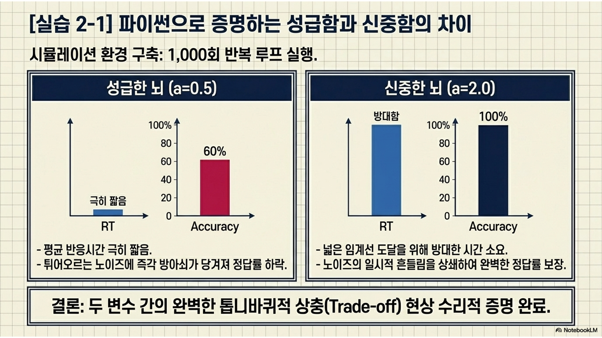
Code
# 0. 다수 반복 시뮬레이션을 위한 범용 함수 정의# 특정 파라미터 세팅으로 1000번의 의사결정(시도)을 반복하여 '정답률(%)'과 '평균 반응시간(RT)'의 통계치를 반환함def simulate_ddm_trials(v, a, noise_std, num_trials=1000): correct_count =0# 1000번의 시도 중 정답의 횟수를 누적할 변수 total_rt =0# 1000번의 시도 동안 소모된 반응시간(ms)을 모두 누적할 합산 변수for _ inrange(num_trials): # num_trials(1000)번 만큼 독립적인 의사결정 시행을 반복함 evidence =0.0# 각 시도의 시작 시점마다 증거 저금통을 깨끗하게 비움 t =0# 각 시도의 시작 시점마다 경과 시간을 0ms로 리셋함whileTrue: # 의사결정이 내려질 때까지 끝없이 1ms씩 시간을 흘려보내는 무한 루프 t +=1# 물리적 시간이 1ms 흘렀음을 표시함# 노이즈가 섞인 증거를 계산하여 뇌의 저금통에 누적함 evidence += v + np.random.normal(0, noise_std)# 위쪽 임계선(+a) 도달: 완벽한 정답 처리if evidence >= a: # 누적 증거가 정답 임계선을 뚫었다면 correct_count +=1# 정답 횟수를 1 증가시킴 total_rt += t # 정답을 내리기까지 소모된 시간(t)을 전체 RT 합산에 더해줌break# 결정을 내렸으므로 현재 시도의 while 루프를 탈출함# 아래쪽 임계선(-a) 도달: 성급한 오답 처리elif evidence <=-a: # 누적 증거가 오답 임계선을 뚫었다면 total_rt += t # 오답도 피험자가 결정을 내린 것이므로 소모된 시간(t)을 기록해줌break# 오답 결정을 내렸으므로 while 루프를 탈출함# 시간이 너무 오래 끌면 피험자가 졸았다고 판단하여 강제 종료 처리(무한루프 방지용 안전장치)if t >5000: # 5초(5000ms)가 넘도록 결정을 못 내리면 total_rt += t # 최대 허용 시간 5000을 기록하고break# 루프를 강제 탈출함 accuracy = (correct_count / num_trials) *100# 정답 횟수를 전체 시도 횟수로 나누어 백분율(%) 정답률을 계산함 mean_rt = total_rt / num_trials # 누적된 전체 RT를 시도 횟수로 나누어 1회당 평균 반응시간을 계산함return accuracy, mean_rt # 최종 계산된 두 통계치를 함수 밖으로 반환함print("=== [실습 2-1] 임계값(a) 조작: 속도와 정확성 간의 타협 ===")# 문제의 고유한 물리적 난이도(v)와 환경 노이즈는 철저히 동일하게 고정함(통제변인 설정)v_fixed =0.05# 정보 유입 속도 고정noise_fixed =0.5# 흔들림의 정도 고정# 1. 성급한 뇌 (a = 2.0): 기저핵의 브레이크가 풀려 임계값이 좁아져 얕은 증거만으로도 방아쇠를 쉽게 당기는 조건acc_hasty, rt_hasty = simulate_ddm_trials(v_fixed, a=2.0, noise_std=noise_fixed)# 2. 신중한 뇌 (a = 5.0): 기저핵의 브레이크가 강하게 걸려 완벽한 확신이 들 때까지 버티는 조건acc_careful, rt_careful = simulate_ddm_trials(v_fixed, a=5.0, noise_std=noise_fixed)# 성급한 조건과 신중한 조건의 정답률 및 평균 RT 결과를 화면에 출력하여 비교함print(f"[성급한 뇌 (a=2.0)] 정답률: {acc_hasty:5.1f}% | 평균 반응시간(RT): {rt_hasty:6.1f} ms")print(f"[신중한 뇌 (a=5.0)] 정답률: {acc_careful:5.1f}% | 평균 반응시간(RT): {rt_careful:6.1f} ms")print("\n-> 통찰: 전두엽이 임계값을 5.0으로 넓게 벌리자 낭떠러지로 떨어질 오답의 위험은 극적으로 차단되었지만(정답률 상승),")print("-> 그 대가로 그 거대한 양동이에 증거를 끝까지 채우느라 반응시간(RT)이 기하급수적으로 느려지는 딜레마를 수학적으로 재현해냄.")
=== [실습 2-1] 임계값(a) 조작: 속도와 정확성 간의 타협 ===
[성급한 뇌 (a=2.0)] 정답률: 69.8% | 평균 반응시간(RT): 19.6 ms
[신중한 뇌 (a=5.0)] 정답률: 90.5% | 평균 반응시간(RT): 83.2 ms
-> 통찰: 전두엽이 임계값을 5.0으로 넓게 벌리자 낭떠러지로 떨어질 오답의 위험은 극적으로 차단되었지만(정답률 상승),
-> 그 대가로 그 거대한 양동이에 증거를 끝까지 채우느라 반응시간(RT)이 기하급수적으로 느려지는 딜레마를 수학적으로 재현해냄.
2.2. 표류율(\(v\))의 위력: 문제의 난이도와 직관의 속도
이론적 설명
이번에는 앞서 살펴본 전두엽의 인지제어 수준, 즉 ’얼마나 신중하게 결정할 것인가’를 세팅해둔 피험자의 내적 확신 기준(임계값 \(a\))은 철저히 통제변인으로 고정해볼 것임. 그 상태에서 오직 눈을 통해 외부에서 쏟아져 들어오는 정보의 질(표류율 \(v\), 과제의 물리적 난이도)만을 극단적으로 조절했을 때 뇌 속에서 어떤 일이 벌어지는지 살펴볼 예정.
표류율(\(v\))이 크다: 정보가 시각적으로 매우 명확하고 강력하다는 뜻(예: 신호 대 잡음비가 높음). 아주 가파른 상승각도로 증거가 뇌에 꽂힘. 노이즈의 방해를 무시하고 뚫고 올라가 순식간에 정답 임계선에 도달하므로, 피험자는 빠르고 정확하게 직관적인 정답을 내뱉음.
표류율(\(v\))이 0에 가깝다: 제시된 정보가 너무 애매하고 헷갈린다는 뜻. 상승곡선이 평지에 가깝게 밋밋하여 목표에 도달하는 데 한세월이 걸리며, 중간에 노이즈(바람 소리)에 휩쓸려 반대편 오답 임계선으로 곤두박질칠 확률도 폭증함.
심화 해설(무작위 점 운동 과제와 Stroop 충돌)
원숭이를 대상으로 한 유명한 무작위 점 운동 과제(random dot kinematogram, RDK)를 떠올려보자. 화면에 100개의 점이 있는데 90개가 오른쪽으로 이동하면(결맞음 90%, 일치 자극), 뇌의 MT 영역 뉴런이 엄청난 속도로 발화하며 표류율(\(v\))이 극대화됨(매우 쉬움).
하지만 겨우 5개의 점만 오른쪽으로 가고 나머지 95개가 무작위로 끓고 있다면(결맞음 5%, 애매한 자극), 진짜 신호를 추출하기 어려워 표류율(\(v\))이 0 근처로 뚝 떨어짐(매우 어려움). 그 결과 원숭이는 레버를 당기기까지 끙끙대며 오랜 시간을 소모하고 극도의 인지적 피로를 느낌.
무작위 점 운동 과제
정의: 인지심리학과 신경과학에서 의사결정과 시각적 움직임 인지를 연구할 때 가장 널리 쓰이는 고전적인 실험과제.
실험방식: 인간 참여자(또는 원숭이)가 모니터를 바라보면 수많은 점들이 개미떼처럼 나타나 움직임. 피험자는 점들의 전체적인 이동 방향이 오른쪽인지 왼쪽인지 판단해서 버튼을 눌러야 함.
핵심변수: 결맞음(coherence). 이 과제의 난이도는 점들이 얼마나 같은 방향으로 일치해서 움직이느냐에 따라 결정됨.
결맞음 100%: 모든 점이 군대처럼 줄을 맞춰 오른쪽으로 이동. 눈 감고도 맞출 수 있는 아주 쉬운 상태.
결맞음 0%: 모든 점이 TV 노이즈(백색잡음)처럼 각자 무작위 방향으로 끓어오름. 전체적인 방향이란 게 아예 존재하지 않음.
결맞음 10%: 100개의 점 중 10개만 오른쪽으로 가고, 95개는 무작위로 움직임. 집중해서 오래 쳐다봐야 겨우 방향을 알아차릴 수 있는 아주 어려운 상태.
DDM과의 연결: 이 ’결맞음’의 비율이 바로 표류확산 모델의 표류율(\(v\))을 결정하는 물리적 실체임. 결맞음이 높을수록 표류율이 가팔라져 증거가 뇌에 팍팍 꽂히게 됨.
뇌의 MT 영역(middle temporal visual area, V5)
정의: 인간과 영장류의 대뇌 피질(뒤통수와 옆통수 사이쯤)에 위치한 시각처리 구역으로, 오직 사물의 움직임만을 전문적으로 감지하고 분석하는 특수부위.
동작원리: 눈을 통해 들어온 시각 정보가 이 MT 영역에 도달하면, 이곳에 있는 뉴런(신경세포)들은 자기가 좋아하는 특정 방향의 움직임이 보일 때만 미친 듯이 흥분해서 전기신호(발화[firing])를 뿜어냄.
RDK 과제와의 결합
만약 RDK 화면에서 점들의 90%가 오른쪽으로 움직인다면(결맞음 90%), MT 영역 내에서 오른쪽 방향을 담당하는 뉴런들이 엄청난 속도로 다발적인 전기신호를 따다다닥 뿜어냄.
반면 점들이 무작위로 흩어지면(결맞음 5%), 좌측 뉴런과 우측 뉴런이 비슷하게 산발적으로 켜지며 뇌가 혼란(노이즈)을 겪음.
의사결정의 완성: MT 영역의 뉴런들이 뿜어내는 이 전기신호들의 총량이 바로 전두엽으로 전달되는 증거임. 이 전기신호가 차곡차곡 누적되어 마침내 전두엽이 정해둔 임계값(\(a\))을 넘어서는 순간, 원숭이는 레버를 당기게 됨.
비유(고속도로 맑은 날씨 vs 눈보라 표지판)
높은 표류율(맑은 날씨의 고속도로): 화창한 대낮에 크고 선명한 글씨로 적힌 ‘서울 10km’ 표지판을 보는 것. 시각정보가 너무나도 뚜렷하여 고민할 필요도 없이 액셀을 밟음.
낮은 표류율(눈보라 속의 얼룩진 표지판): 엄청난 눈보라(노이즈) 속에서 진흙이 잔뜩 묻어 글씨가 지워진 표지판을 보는 것. 차를 멈추고 창문을 열어 뚫어져라 쳐다보며(긴 반응시간 소모), “저게 서울이야, 서산이야?” 하고 헷갈려하다 결국 엉뚱한 길(오답)로 빠지게 됨.
[그림 9] 표류율 변화에 따른 증거축적 궤적과 기울기의 차이
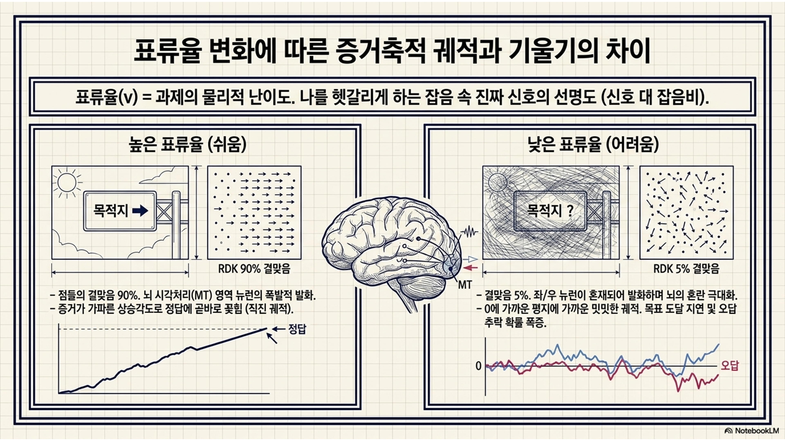
[실습 2-2] 표류율(\(v\)) 조작을 통한 쉬운 문제와 어려운 문제의 비교
직관적으로 한눈에 들어오는 쉬운 문제(높은 표류율)와 애매하게 헷갈려서 인지적 충돌을 일으키는 어려운 문제(낮은 표류율)가 주어졌을 때, 뇌의 시뮬레이션 결과가 어떻게 무너지는지 코드로 증명함.
[그림 10] [실습 2-2] 문제 난이도에 따른 뇌의 고군분투
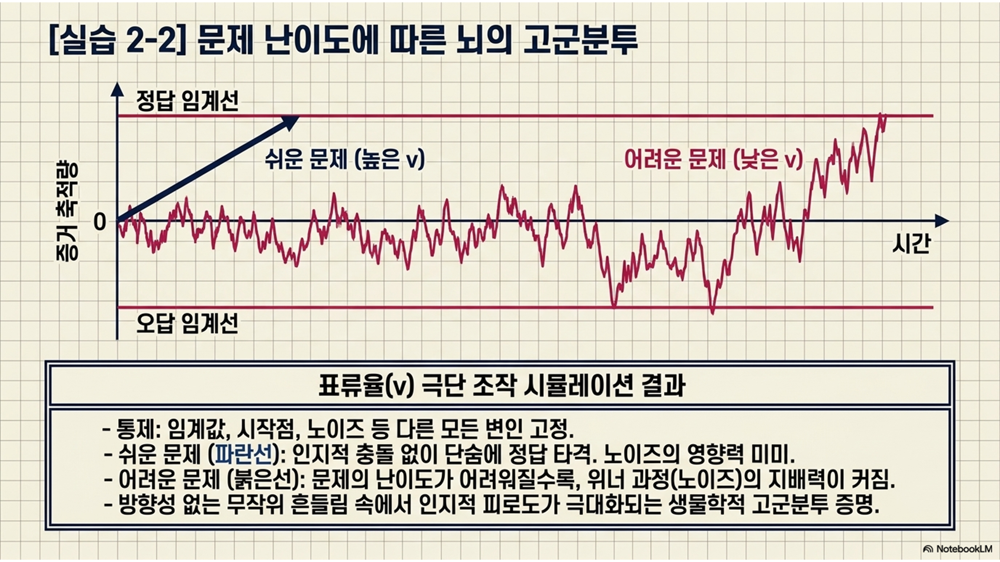
Code
print("=== [실습 2-2] 표류율(v) 조작: 문제의 물리적 난이도가 RT와 오답률에 미치는 폭력적 영향 ===")# 내 성격(임계값 a=3.0)과 환경의 백색잡음(노이즈=0.5)은 두 과제에서 철저히 동일하게 고정함a_fixed =3.0# 성급하지도, 지나치게 신중하지도 않은 3.0의 안정적인 임계값 설정noise_fixed =0.5# 주변환경의 산만함 정도를 0.5로 고정# 1. 아주 쉬운 문제 (v = 0.20): 확실하고 뚜렷한 단서가 무서운 속도로 뇌에 꽂히는 상황 모사(예: 90% 결맞음의 RDK 점들)acc_easy, rt_easy = simulate_ddm_trials(v=0.20, a=a_fixed, noise_std=noise_fixed) # v를 0.2로 높게 설정하여 함수 호출# 2. 아주 어려운 문제 (v = 0.02): 단서가 서로 충돌하고 미약해서 노이즈에 쉽게 휘청거리는 상황 모사(예: 파란 글씨로 적힌 '빨강')acc_hard, rt_hard = simulate_ddm_trials(v=0.02, a=a_fixed, noise_std=noise_fixed) # v를 0.02로 극단적으로 낮춰 함수 호출# 직관적으로 판단할 수 있는 쉬운 과제와 어려운 과제의 시뮬레이션 결과를 화면에 병렬로 출력함print(f"[쉬운 직관적 과제 (v=0.20)] 정답률: {acc_easy:5.1f}% | 평균 반응시간(RT): {rt_easy:6.1f} ms")print(f"[어렵고 꼬인 과제 (v=0.02)] 정답률: {acc_hard:5.1f}% | 평균 반응시간(RT): {rt_hard:6.1f} ms")print("\n-> 결론: 복잡하고 어려운 문제를 풀 때 우리가 오랜 시간을 소모하는 이유는, 뇌로 들어오는 정보의 유입 속도(v)가 너무 낮아 긴 시간 동안 헷갈리는 노이즈의 바다 속을 힘겹게 통과해야 하기 때문임을 수학적으로 증명함.")
=== [실습 2-2] 표류율(v) 조작: 문제의 물리적 난이도가 RT와 오답률에 미치는 폭력적 영향 ===
[쉬운 직관적 과제 (v=0.20)] 정답률: 99.7% | 평균 반응시간(RT): 16.0 ms
[어렵고 꼬인 과제 (v=0.02)] 정답률: 62.5% | 평균 반응시간(RT): 42.1 ms
-> 결론: 복잡하고 어려운 문제를 풀 때 우리가 오랜 시간을 소모하는 이유는, 뇌로 들어오는 정보의 유입 속도(v)가 너무 낮아 긴 시간 동안 헷갈리는 노이즈의 바다 속을 힘겹게 통과해야 하기 때문임을 수학적으로 증명함.
2.3. 비의사결정 시간(\(T_{er}\))과 전체 반응시간의 완성
이론적 설명
DDM 모델을 최종적으로 현실의 참여자 데이터에 맞추기 위해 도입된 마지막 필수 파라미터는 비의사결정 시간(non-decision time, \(T_{er}\))임.
우리가 아무리 전두엽의 임계값을 0으로 좁혀놓고 마음속 고민을 단 1ms도 하지 않는 성급한 상태라고 하더라도, 버튼을 0.0초 만에 누르는 것은 생물학적으로 불가능함.
순수한 물리적 한계(단축 불가)
지각적 지연(encoding delay): 모니터에서 뿜어져나온 빛의 광자가 망막을 때리고, 시신경을 거쳐 1차 시각피질(V1)에 도달하여 형체를 인식하는 시간.
운동적 지연(motor execution delay): 뇌에서 결정을 내린 뒤 1차 운동피질(M1)에서 시작된 건기신호가 척수를 타고 내려가 손가락 근육을 수축시켜 실제 키보드를 클릭하는 데 걸리는 시간.
인간의 경우 이 순수한 물리적 딜레이(\(T_{er}\))의 합산은 보통 약 200~300ms 정도를 차지함.
심화 해설(RT 분포의 꼬리가 긴 분포 형성 원리)
인간의 최종적인 관측 반응시간(total RT) 공식: \(Total R\)T \(=\) (무작위 행보를 통해 증거가 임계값에 도달하는 순수 인지적 고민 시간) \(+\)\(T_{er}\) (지각/운동의 물리적 딜레이 시간 상수).
DDM의 무작위 행보 과정은 필연적으로 어떤 시행에서는 우연히 아주 빨리 끝나고, 어떤 시행에서는 우연히 아주 늦게 끝나는 꼬리가 긴 분포(right-skewed distribution)를 만들어냄. 여기에 상수인 \(T_{er}\)이 더해지면서 전체 확률 밀도 그래프가 온전히 오른쪽으로 평행 이동함. 이것이 실제 심리학 논문에서 흔히 보는 엑스-가우시안(ex-Gaussian) 형태의 RT 분포 곡선이 탄생하는 근본원리임.
비유(온라인 쇼핑의 구매와 택배배송)
순수 고민 시간(무작위 행보): 쇼핑몰에 접속해서 리뷰를 꼼꼼히 읽고, 장바구니에 담았다 뺐다 하며 살까 말까 치열하게 고민하는 뇌 속의 시간. \(\Rightarrow\) 물건이 비싸거나 어려우면 며칠이 걸릴 수도 있고, 확 꽂히면 1분 만에 끝날 수도 있는 가변적 시간.
비의사결정 시간(\(T_{er}\)): 마침내 결제를 완료(방아쇠 격발)한 뒤, 쇼핑몰 창고에서 물건이 포장되어 택배 트럭에 실려 우리 집 문 앞에 실제로 물리적으로 배달되기까지 무조건 걸리는 고정적인 시간(예: 무조건 최소 2일 소요).
우리가 물건을 손에 쥐는 최종 체감시간은 이 둘의 합산임.
[실습 2-3] 최종 DDM 반응시간(RT) 분포 시뮬레이션 및 데이터 생성
지금까지 배운 모든 인지 파라미터(\(v, a, \sigma, T_{er}\))를 하나로 결합하여, 실제 심리학 실험실에서 인간 참여자를 앉혀놓고 버튼을 누르게 해서 얻어낸 것과 똑같은 형태의 반응시간 데이터를 컴퓨터로 모사하여 생성해냄.
[그림 11] [실습 2-3] 최종 DDM: 인간의 실제 반응시간 분포 모사
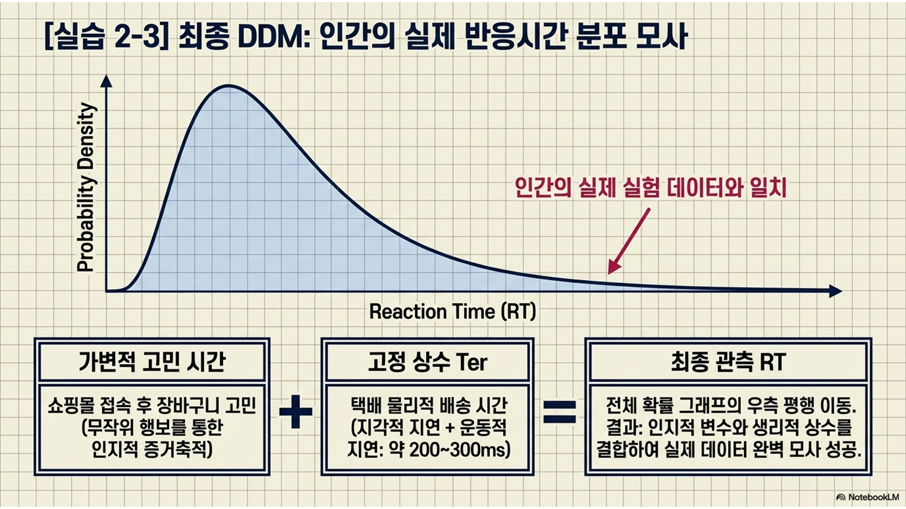
Code
import numpy as np # 수학적 연산을 위해 numpy 라이브러리 재호출print("=== [실습 2-3] DDM 핵심 파라미터 통합: 현실적인 인간의 RT 데이터 생성 ===")# DDM의 뇌를 현실 세계의 신체적 한계와 연결하는 풀세팅 파라미터 정의v =0.08# 표류율: 적당히 주의를 집중해서 풀어야 하는 중간 난이도의 과제 설정a =2.5# 임계값: 함부로 누르지도, 너무 질질 끌지도 않는 적당히 신중한 보통의 성격 설정noise_std =0.4# 노이즈: 매 순간 피험자의 뇌파와 신경망을 흔드는 일상적인 인지적 잡음 수준t_er =250# 비의사결정 시간: 눈으로 자극을 보고 손가락 근육을 물리적으로 수축시키는 데 걸리는 하드웨어적 한계 딜레이(250ms)num_trials =10# 화면 출력의 가독성을 고려하여 단 10번의 실험(trial)만 수행하여 개별 과정을 관찰함for trial inrange(1, num_trials +1): # 1번부터 10번까지 피험자가 10번의 과제를 연속으로 수행하는 상황을 루프로 묘사 evidence =0.0# 매 문항마다 피험자는 이전 기억의 편향 없이 백지 상태(0.0)에서 고민을 시작함 decision_time =0# 뇌 속의 전두엽에서만 일어나는 순수 인지적 고민 시간을 0으로 초기화# 1. 뇌의 치열한 순수 고민 시간 도출(무작위 행보 구현)whileTrue: # 피험자가 확신을 내릴 때까지 무한정 증거를 수집하는 정신적 과정 decision_time +=1# 1ms의 시간이 뇌 속에서 흘러감# 난이도(v)와 신경학적 잡음(random.normal)을 합산하여 현재 1ms 동안의 증거를 누적함 evidence += v + np.random.normal(0, noise_std)# 누적된 증거가 위쪽 정답(+2.5)이든 아래쪽 오답(-2.5)이든 임계값 테두리에 닿으면 즉시 뇌 속의 고민 루프를 강제 탈출함if evidence >= a or evidence <=-a:break# 2. 뇌의 결정을 현실의 손가락 움직임으로 변환(T_er 합산)# 뇌 속에서 결정이 끝난 순수 인지 시간(decision_time)에 신경망-근육 전달 물리적 딜레이(t_er)를 더해 최종 관측 시간을 완성함 final_rt = decision_time + t_er# 누적된 증거(evidence)가 정답 임계선(+a)을 넘었으면 '정답', 노이즈에 휩쓸려 오답 임계선(-a)으로 떨어졌으면 '오답'으로 판별함 result ="정답(+)"if evidence >= a else"오답(-)"# 각 시행별로 피험자의 뇌가 어떻게 체력을 쪼개어 소모했는지 그 내부 구조 로그를 터미널에 상세히 출력함print(f"Trial {trial:2d} | 뇌 속 치열한 고민: {decision_time:3d}ms + 물리적 근육 딜레이: {t_er}ms => 최종 관측 반응시간(RT): {final_rt:4d}ms ({result})")print("\n-> 통찰: 인간의 실험실 반응시간은 매번 달라지는 '순수 인지적 고민 시간(가변적 무작위 행보)'과 절대 변하지 않는 '지각/운동의 물리적 한계 시간(상수 T_er)'이 결합된 생물학적 복합체임.")print("-> 이러한 시뮬레이션 데이터를 수만 개 생성하여 빈도수 히스토그램을 그리면, 우측으로 길게 꼬리가 늘어지는 인간 참여자 특유의 엑스-가우시안(ex-Gaussian) RT 분포 곡선과 완벽하게 일치하게 됨.")
=== [실습 2-3] DDM 핵심 파라미터 통합: 현실적인 인간의 RT 데이터 생성 ===
Trial 1 | 뇌 속 치열한 고민: 19ms + 물리적 근육 딜레이: 250ms => 최종 관측 반응시간(RT): 269ms (정답(+))
Trial 2 | 뇌 속 치열한 고민: 66ms + 물리적 근육 딜레이: 250ms => 최종 관측 반응시간(RT): 316ms (정답(+))
Trial 3 | 뇌 속 치열한 고민: 29ms + 물리적 근육 딜레이: 250ms => 최종 관측 반응시간(RT): 279ms (정답(+))
Trial 4 | 뇌 속 치열한 고민: 56ms + 물리적 근육 딜레이: 250ms => 최종 관측 반응시간(RT): 306ms (정답(+))
Trial 5 | 뇌 속 치열한 고민: 10ms + 물리적 근육 딜레이: 250ms => 최종 관측 반응시간(RT): 260ms (정답(+))
Trial 6 | 뇌 속 치열한 고민: 24ms + 물리적 근육 딜레이: 250ms => 최종 관측 반응시간(RT): 274ms (정답(+))
Trial 7 | 뇌 속 치열한 고민: 42ms + 물리적 근육 딜레이: 250ms => 최종 관측 반응시간(RT): 292ms (정답(+))
Trial 8 | 뇌 속 치열한 고민: 32ms + 물리적 근육 딜레이: 250ms => 최종 관측 반응시간(RT): 282ms (정답(+))
Trial 9 | 뇌 속 치열한 고민: 44ms + 물리적 근육 딜레이: 250ms => 최종 관측 반응시간(RT): 294ms (오답(-))
Trial 10 | 뇌 속 치열한 고민: 15ms + 물리적 근육 딜레이: 250ms => 최종 관측 반응시간(RT): 265ms (정답(+))
-> 통찰: 인간의 실험실 반응시간은 매번 달라지는 '순수 인지적 고민 시간(가변적 무작위 행보)'과 절대 변하지 않는 '지각/운동의 물리적 한계 시간(상수 T_er)'이 결합된 생물학적 복합체임.
-> 이러한 시뮬레이션 데이터를 수만 개 생성하여 빈도수 히스토그램을 그리면, 우측으로 길게 꼬리가 늘어지는 인간 참여자 특유의 엑스-가우시안(ex-Gaussian) RT 분포 곡선과 완벽하게 일치하게 됨.
7주차 요약 및 다음 주 예고
[그림 12] 패러다임 비교: 정적 예측에서 동적 과정으로
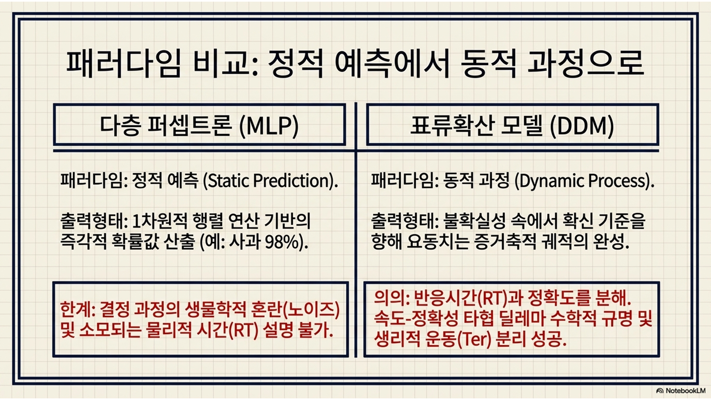
요약
의사결정은 한순간에 뚝딱 이루어지는 1차원적 행렬 연산이 아니라, 불확실한 외부 정보(표류율)와 신경학적 혼란(노이즈)이 뒤섞인 채 마음속의 확신기준(임계값)을 향해 요동치며 나아가는 역동적인 증거축적 과정임.
표류확산 모델(DDM)은 피험자의 반응시간(RT)과 정확도를 파라미터(\(a\)와 \(v\)) 조작만으로 분해해냄으로써, 생물학적 인지 시스템이 진화적으로 마주한 ’속도-정확성 타협’이라는 피할 수 없는 딜레마를 수학적으로 증명.
비의사결정 시간(\(T_{er}\)) 파라미터를 통해 전두엽의 인지적 고민 과정과 시각피질/척수/근육의 순수 생리적 운동 과정을 깔끔하게 분리해내는 심리학적 정밀함을 달성함.
다음 주(8주차) 예고
이번 주에는 파이썬 코드에 모델 파라미터를 임의로 입력해 가상의 데이터를 만들어내는 정방향(forward modeling) 시뮬레이션을 주로 수행했음.
다음 주에는 이를 거꾸로 뒤집어, “실험실의 실제 피험자가 남긴 엑셀 데이터 파일(단순한 RT와 정답률 숫자들)만 보고, 이 사람의 뇌 속에 존재했던 보이지 않는 임계값(\(a\))과 표류율(\(v\))이 정확히 수치적으로 몇이었는지 심리측정학적으로 역추적할 수 있을까?”라는 궁극적 과제로 넘어감.
수많은 파라미터(\(v, a, t_{er}\))의 광활한 바다 속에서 인간의 실제 데이터와 가장 오차가 적은 완벽한 조합을 거꾸로 찾아내는 무식하지만 강력한 탐색 기법인 그리드 서치(grid search)를 배움.
모델의 설명력과 적합도를 통계적으로 엄밀하게 평가하는 SSE(오차 제곱합) 및 MLE(최대우도추정)를 통한 파라미터 최적화(model fitting) 실습을 다룰 예정임. \(\Rightarrow\) 학기 중반 중간 모델링 실습 과제 수행과 기말 보고서 작성을 위해 반드시 마스터해야 하는 핵심 통계 코스임!